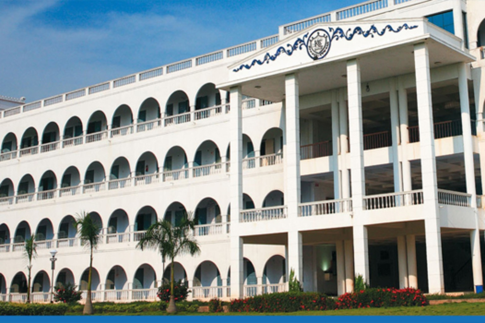
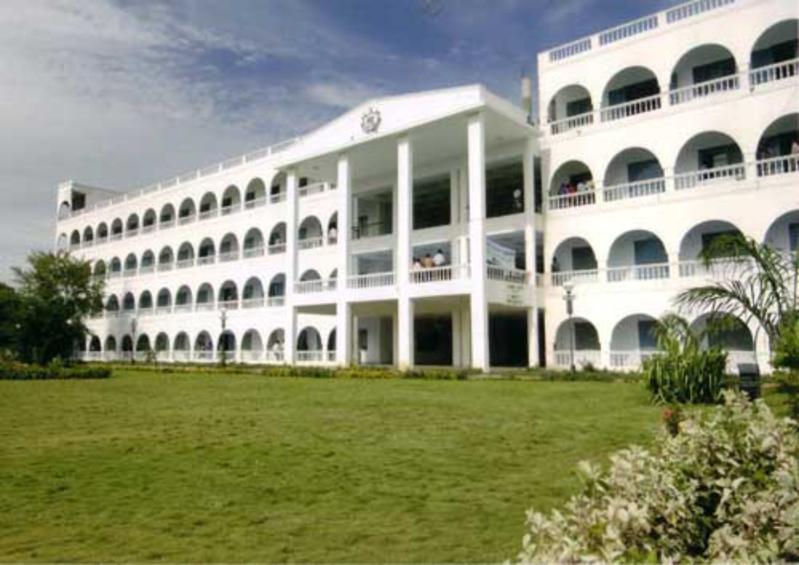

Learn from experts
Engage with academic specialists and industry professionals working across electrical engineering and intelligent systems.
A six-day faculty development programme exploring intelligent technologies and their real-world applications in electrical power and energy engineering.
● Registration closes on 13 November 2026

This FDP brings together academic and industry perspectives to help participants explore data-driven methods, artificial intelligence, edge computing and modern electrical engineering applications.
Read the programme brochure →Engage with academic specialists and industry professionals working across electrical engineering and intelligent systems.
Explore data analytics, AI, IoT and edge technologies through engineering-focused topics and applications.
Discover approaches for research, innovation and industry-relevant problem solving in modern power systems.
Bridge theoretical concepts and real-world applications through interdisciplinary learning and discussion.
Explore key topics shaping the future of electrical power, energy systems and intelligent engineering.
Power quality features and intelligent techniques for modern energy systems.
↗Efficient intelligence closer to the data source.
↗AI techniques for intelligent power conversion.
↗Advanced data processing for high-voltage equipment monitoring.
↗Analysis of signals for improved engineering insight.
↗Analog and mixed-signal circuits, IoT applications, EV architectures and HV systems.
↗The brochure features academic experts and industry professionals from institutions and organisations across India.
HOD, Department of ECE
IIITDM, KancheepuramAssociate Professor (Senior)
VIT, VelloreAssistant Professor, EEE
NIT, CalicutAssistant Professor, ICE
NIT, TrichyAssistant Professor (Sr. Gr.), EEE
Amrita Vishwa Vidyapeetham, CoimbatoreProfessor – Grade II
VIT, VelloreIndustry experts are also featured in the official brochure. Please refer to it for their names and designations.
The programme aims to strengthen participants' ability to apply intelligent, data-driven methods to real engineering challenges.
Apply through ATAL ↗Analyse complex electrical engineering problems and data sets.
Design data-driven models for diagnosis, forecasting and optimisation.
Understand real-time monitoring, control and smart electrical systems.
Develop a stronger foundation for interdisciplinary research and projects.
Interested faculty members, research scholars, PG scholars and eligible participants can apply through the official ATAL Academy portal.
Continue to the ATAL Academy portal to complete your application.
Open registration portal ↗Registration is completed on the official ATAL website.
Punalkulam, Gandarvakottai Taluk (Near Thanjavur), Pudukkottai District, Tamil Nadu – 613 303
Kings College of Engineering (Autonomous)
+91 63809 89024